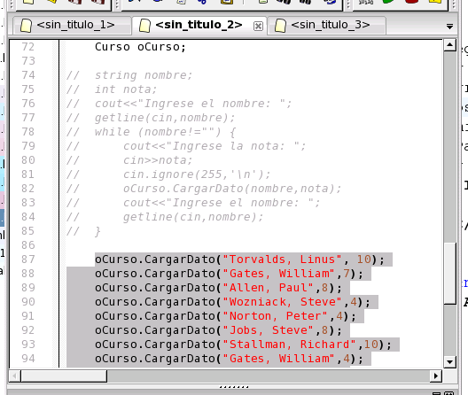

Una vez corregidos estos errores presione nuevamente F9 para correr el programa. Si todo se desarrolló correctamente el programa correrá con normalidad. Para probarlo con el conjunto de datos que figura entre las lineas 87 y 102, deberemos descomentar las mismas, y comentar la carga por consola de las lineas 74 a 85. Para ello, seleccione las lineas 74 a 85 y presione Ctrl+D, y luego seleccione las lineas 87 a 102 y presione Ctrl+Shift+D.

Volver... Continuar...